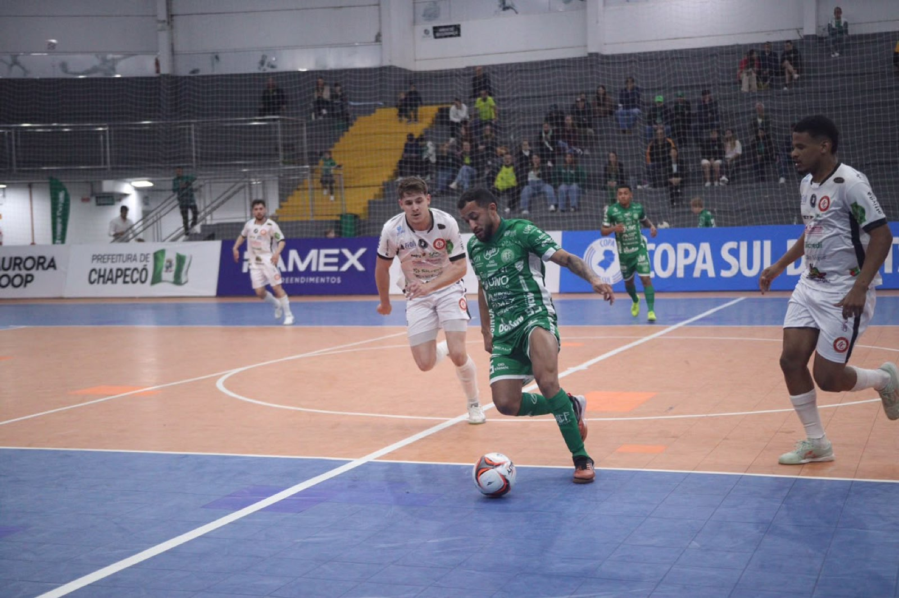
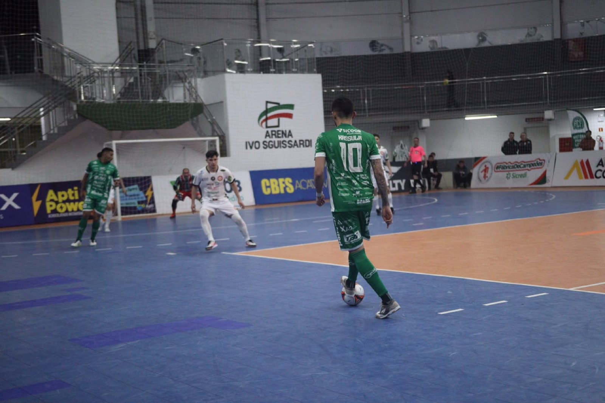

A cidade de Xanxerê é o centro das atenções do futsal masculino em nível sul-brasileiro. Começou nesta quarta-feira (23) a 16ª edição da Copa Sul, com a participação de oito equipes dos três estados da região. A equipe Prefeitura de Chapecó/Chapecoense/Unochapecó é o dono da casa na disputa que tem como palco a Arena Ivo Sguissardi. Na estreia, à noite, a agremiação verde-branca foi superada por 3 a 0.

O Verdão das Quadras foi surpreendido logo aos 51 segundos jogados. Danrley aproveitou uma saída errada do torneio para abrir o placar. A equipe comandada pelo técnico Leonardo Schroeder martelou durante todo o primeiro tempo, enquanto os gaúchos somente se defenderam e não tiveram mais chances claras. Apesar de pressionar, o time do Oeste catarinense acabou indo para o intervalo atrás no marcador.
Na segunda etapa, o Guaporé ampliou a vantagem cedo. A 1’29”, em mais uma roubada de bola no ataque, o clube do Rio Grande do Sul balançou a rede, desta vez com Cunha. A Chapecoense continuou empilhando oportunidades, mas sem acertar na conclusão, e, quando estava com o goleiro-linha, levou o terceiro aos 18’54”, com Rhuan.

Programação
A primeira rodada da Copa Sul teve outros três jogos. O Passo Fundo (RS) venceu o Guarapuava (PR) por 4 a 2 na abertura do torneio. Na sequência, o Jaraguá atropelou o Criciúma em duelo entre times de Santa Catarina: 7 a 1. Depois, o Campo Mourão (PR) derrotou o Caçador por 1 a 0.
A competição prossegue nesta quinta (24) com mais quatro partidas. Às 14h, enfrentam-se Criciúma x Guarapuava. Às 16h, há o confronto entre Campo Mourão e Guaporé. A agenda continua com Passo Fundo x Jaraguá, às 18h. A segunda rodada chega ao fim com Chapecoense x Caçador, às 20h.
Sócio não paga
O sócio da Chape Futsal não precisa adquirir ingresso para entrar. Basta apresentar a carteirinha para ter acesso. O passaporte para assistir a todos os duelos custa R$ 100. O bilhete por dia sai por R$ 30, com meia-entrada (R$ 15) para pessoas com direito garantido por lei. Crianças até 12 anos não pagam, desde que acompanhadas por um responsável e portando documento de identificação. A Copa Sul vai até este domingo (27).
Crédito das fotos: @rogersilva_fotografia/@achapefutsal